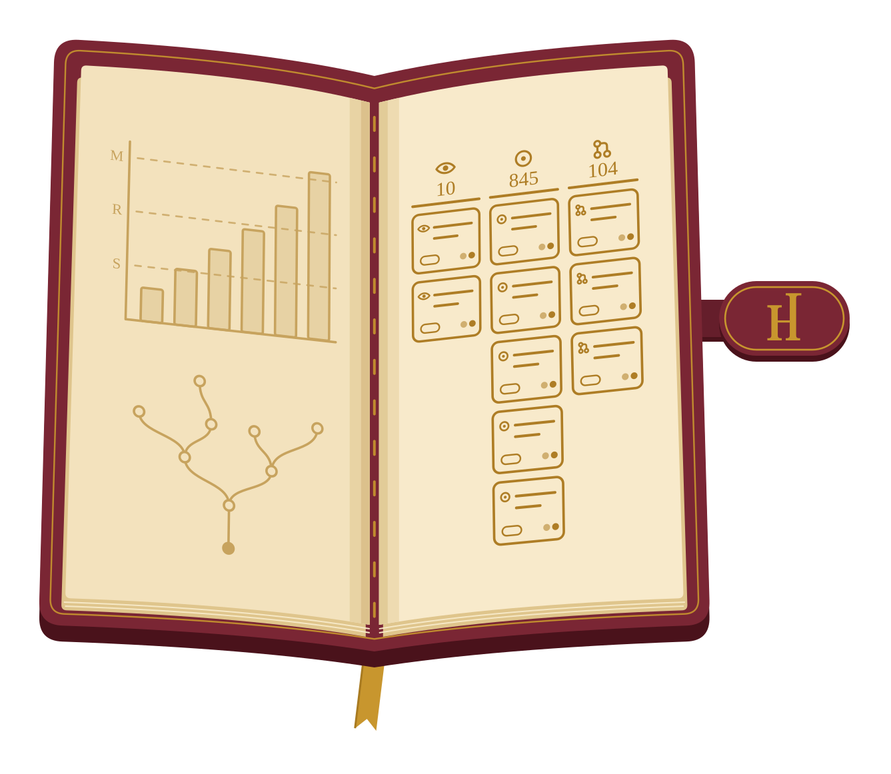
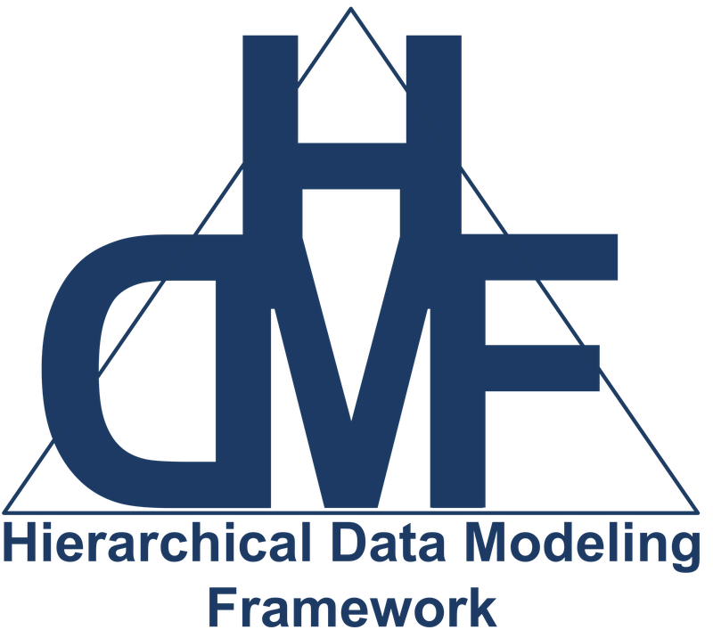

Highlighted Projects
- HEARTH | Lead Developer | 2026-Present
-
- Distributed by
- npm
- Websites
-
 HEARTH Apps
The main landing page for the HEARTH data ecosystem.
BBQS Uploader A web app for BBQS teams to easily upload files to an existing Dandiset on the EMBER Archive through a simple drag-and-drop interface.Clip Extractor A web app for selecting a clip (a snippet range or a single frame) from a video and saving it locally or uploading directly to the EMBER Archive.Encoding Helper A web app for education and comparison of video encodings.
HEARTH Apps
The main landing page for the HEARTH data ecosystem.
BBQS Uploader A web app for BBQS teams to easily upload files to an existing Dandiset on the EMBER Archive through a simple drag-and-drop interface.Clip Extractor A web app for selecting a clip (a snippet range or a single frame) from a video and saving it locally or uploading directly to the EMBER Archive.Encoding Helper A web app for education and comparison of video encodings. - Repositories
-
bbqs-web-app-template A generic template for recommend static web apps.bbqs-web-components Common components shared across web apps for this organization.
- Contributions
Built the Hub for Exploratory Analysis, Resource-sharing, Testing, and Hypothesis-generation (HEARTH), a suite of web apps for the Brain Behavior Quantification and Synchronization (BBQS) consortium and its data on the EMBER Archive.
Includes an uploader for adding files to a Dandiset on the EMBER Archive through a simple drag-and-drop interface, a clip extractor for saving a snippet or single frame of a video, and an encoding helper for the education and comparison of video encodings. The latter two grew from prototypes created in collaboration with the Talmo Lab.
Generalized the shell the apps share into a template for new single-page, backend-free apps and a set of common component packages, each covered by unit, integration, and visual snapshot tests.
- DANDI Archive | Contributor | 2022-Present
- Contribution: Integrated the NWB Inspector into the validation of every upload, designed the options for backing up the archive's petabyte-scale storage along with their cost estimates, and added a table viewer for TSV assets to its web app.
-
- Repositories
-
dandi-archive DANDI API server and Web appdandi-cli DANDI command line client to facilitate common operationsdandi-docs DANDI Documentationsimple-s3-backup Simple scripts for running backup on MIT cluster.backup-status Current status of S3 bucket backup of the DANDI Archive.
- Contributions
- Related software
- NWB Inspector
Contributed to the DANDI Archive for neurophysiology and neuroimaging data, from its command line client to its web app, its documentation, and the backup of its storage.
Integrated the NWB Inspector into the validation the DANDI command line client runs before every upload, so that each NWB file submitted to the archive is checked against best practices, and documented it for uploaders.
Researched options for stable, cost-effective, long-term backup of the archive's petabyte-scale S3 storage, written up as design documents with cost estimates, and maintains the scripts and status dashboard of its backup.
Enhanced the web app with a table viewer for TSV assets, file browser rows that are real links, and end-to-end tests, and stopped it from exposing the URLs for managing OAuth applications. Fixed and extended the command line client, such as accepting a DataLad dataset's not-yet-downloaded files as paths to validate and recording which NWB Inspector version validated each file.
- EMBER Archive | Contributor | 2025-Present
- Contribution: Opened the archive's API to the consortium's web apps, listed the HEARTH apps among its tools, and brought the DANDI Archive's usage analytics to it.
-
- Repositories
-
BBQS-EMBER-web BBQS EMBER Archive web appBBQS-EMBER-docs EMBER Documentationdandi-infrastructure A repository to collect docs/issues on DANDI project infrastructure for Emberember-dandi-access-summaries Summaries of access stats (full downloads & streaming) for each EMBER-Dandiset on the EMBER archive.
- Contributions
- Related software
- S3 Log Analytics
Contributed to the EMBER Archive, which holds the Brain Behavior Quantification and Synchronization (BBQS) consortium's data in Dandisets on its own deployment of the DANDI Archive.
Added the consortium's web apps to the archive's CORS permissions, so that they can call its API from the browser, and listed the HEARTH apps on the Tools page of its website.
Brought the usage analytics built for the DANDI Archive to EMBER, publishing summaries of the full downloads and streaming of each of its Dandisets.
Wrote user stories for the Clip Extractor in the archive's documentation, and a strategy for previewing pull requests to it, including those from forks.
- S3 Log Analytics | Lead Developer | 2024-Present
-
- Distributed by
- PyPI conda-forge
- Websites
-
Dandiset Usage Summaries Visualizations of data usage across the archive.
- Contributions
- Used by
- EMBER Archive
Created a Python package for the fast extraction of access summary data from Amazon S3 server logs, originally developed for the DANDI Archive and steadily being rolled out to others. Has been applied to tens of billions of records across 20+ TB of logs.
Anonymizes each requester, maps it to a geographic region, and aggregates the requests into per-dataset summaries and archive-wide totals that are shared through a public data repository.
Extended it for the DANDI Archive's own logs and built the DANDI usage page (usage.dandiarchive.org), which visualizes data usage across the archive, including monitoring of security threats.
- NWB GUIDE | Lead Developer | 2023-2024
-
- Distributed by
- GitHub Releases
- Contributions
- Presented in
- NWB GUIDE: Simplifying the conversion of neurophysiology data to NWB format (2024) Neuroconv and NWB GUIDE tutorial (2023)
- Related software
- NeuroConv NWB Inspector
Developed an intuitive user interface for file management using interactive validation and real-time suggestions, streamlining the process for data submission to NIH archives.
Ensured a robust testing suite involving multiple levels of integration and user interactions emulated using Puppeteer to enhance reliability and long-term maintainability.
Tracked and documented dozens of hands-on user tests to refine the user experience.
- NeuroConv | Lead Developer | 2020-2024
-
- Distributed by
- PyPI GitHub Container Registry
- Contributions
- Presented in
- NeuroConv: Streamlining neurophysiology data conversion to the NWB standard (2025) NeuroConv: Automated conversion of neurophysiology data to NWB format (2023) Neuroconv and NWB GUIDE tutorial (2023) NeuroConv tutorial (2022)
- Related software
- Hierarchical Data Modeling Framework (HDMF)
Established an automated data conversion tool capable of reading more than 40 distinct data formats used by neurophysiology acquisition devices in order to automatically write to the NeurodataWithoutBorders (NWB) standard.
Designed universal APIs which transparently handled each layer of complexity to simplify the tasks of tagging, grouping, metadata transcription, temporal alignment, asset linking, buffering, chunking, and compression.
Implemented a distributed cloud deployment system to run large-scale, off-site, batched conversions through Amazon Web Services (AWS).
- Neurosift | UX Design and Contributor | 2023-Present
- Contribution: Added on-the-fly analyses computed in the browser: spectrograms of LFP streams with adjustable hyperparameters, and event-related signals that align any time series to a table of intervals.
-
- Distributed by
- PyPI
- Websites
-
 Neurosift
Browser-based NWB visualization and DANDI exploration
Neurosift
Browser-based NWB visualization and DANDI exploration
- Contributions
- Featured contributions
-
On the fly spectrogram +4,677 −20Event Related Signals +1,979 −102
- Replaces
- NWB Widgets (Legacy)
Aided in the design of a browser-based application for visualizing the contents of terabyte-scale neurophysiology datasets. Supports time series, images, videos, pose, tabular, annotated events, and all associated metadata through an intuitive exploration interface. Utilizes a specialized HDF5 web assembly implementation for increased efficiency when streaming data from the S3-backed archives.
- NWB Benchmarks | Core Developer | 2024-Present
-
- Contributions
- Related software
- Hierarchical Data Modeling Framework (HDMF)
Managed a collection of unit and integration tests whose performance metrics (time, memory, and web packets) are sampled against a range of environmental run configurations, machine specifications, and bandwidth limits with the results used to assess the performance of HDF5 and Zarr file packaging parameterization against cloud streaming methods.
Run outputs are aggregated into a common public database and built-in visualization tools generate reports of summary findings. A manuscript discussing interpretations and recommendations is in preparation.
Built as an extension on top of the popular Airspeed Velocity (ASV) benchmarking framework.
- DANDI Compute | Lead Developer | 2025-Present
-
- Distributed by
- GitHub GitHub Container Registry
- Websites
-
DANDI Compute: AIND Pipeline Results Simple webpage rendering the basic aspects of the DANDI Compute: AIND Ephys project.
- Repositories
-
dandi-compute-core Contains essential code for orchestrating computation submission and queue management for processing pipelines acting on DANDI assets.dandi-compute-global-logs Global logs of runtime activity for DANDI Compute.
- Contributions
- Related software
- DANDI Cache duct
Built an orchestration system that runs processing pipelines over assets already published on the DANDI Archive and uploads the results back to the archive, such as spike sorting through the AIND ephys pipeline and LFP extraction from raw electrophysiology.
Packages each unit of work as a self-describing job capsule carrying its own submission script, parameters, and provenance, runs it as part of a SLURM array job on the MIT Engaging cluster, and tracks every capsule through its lifecycle using nothing but the archive's own metadata.
Automated job submission through a self-hosted runner on the cluster, and published a results page for reviewing, comparing, and curating the pipeline runs.
- DANDI Cache | Lead Developer | 2026-Present
-
- Distributed by
- GitHub GitHub Container Registry
- Repositories
-
dandi-cache-utils A centralized codebase of operations used across the DANDI Cache.cache-template A common template with suggested structure, layout, and mechanisms for a typical DANDI Cache.dandi-cache-action Vendored GitHub actions for DANDI Cache.dandi-cache-dashboard A quick reference for the current state of all cache repositories.superset DataLad superset of all the DANDI caches.
- Contributions
- Related software
- NWB Inspector
- Used by
- DANDI Compute
Created a living collection of up-to-date, pre-computed mappings commonly used by developers working with the DANDI Archive, such as which assets are NWB files, which of those are valid according to the NWB Inspector, and measures of their internal structure.
Each cache is the same pipeline around a different operation: read one or more upstream caches, work out what is not yet recorded, process each new item, and publish JSON Lines with full DataLad provenance.
Every cache shares a central library, container images, GitHub Actions, and a template, gathered into one DataLad superdataset with a dashboard of the current state of each.
- STAMPED Principles | Core Developer | 2026-Present
-
- Websites
-
STAMPED Compliance Checklist An interactive checklist for compliance to STAMPED principles.STAMPED Principles GitHub landing page for STAMPED organization.
- Repositories
-
stamped-principles-schema The formal LinkML schema and instance for the STAMPED principles.stamped-checklist-schema The formal LinkML schema and instance for the STAMPED checklist.stamped-branding Collection of formal logos for the STAMPED principles.
- Contributions
Co-developed seven principles for structuring and managing research objects (the data, code and computational environments behind a result, kept together as one unit) so that others can trust, rerun and build upon them: Self-containment, Tracking, Actionability, Modularity, Portability, Ephemerality and Distributability.
Created the interactive compliance checklist, a web app for assessing a research object against the requirements of each principle with a yes or no and a reason for each, which keeps its answers in the page's URL for sharing and prints as a report.
Formalized the principles and the checklist as LinkML schemas, each released with its own DOI, from which the checklist loads the version it shows, and designed the project's logos and website.
- NWB Inspector | Lead Developer | 2022-2024
-
- Distributed by
- PyPI conda-forge
- Contributions
- Used by
- DANDI Archive NWB GUIDE DANDI Cache MICrONS
Built a command line tool used by the NIH data archive to validate all data uploads, which ensures all submissions are provided automated suggestions for metadata improvements that enhance data findability and reuse.
Mirrored the design, style, and functionality of linting tools such as flake8, pydocstyle, and ruff.
- Historia | Lead Developer | 2026-Present
-
- Distributed by
- PyPI conda-forge
- Contributions

Created a command line tool for backing up records of GitHub activity (the pull requests and issues a person opened, was assigned, or reviewed) for use in creating dashboard reports of work history.
Paired with a GitHub Action that runs the whole scheduled update of a work history data repository: fetching recent activity, committing it, populating a GitHub Projects board, and publishing a compressed archive of the data.
- nwb2bids | Lead Developer | 2025-Present
-
- Distributed by
- PyPI conda-forge GitHub Container Registry
- Contributions
- Related contributions
-
[ENH]: BEP032 formal review +2,481 −21
Created a metadata extraction tool for organizing datasets of NeurodataWithoutBorders (NWB) files following the Brain Imaging Data Structure (BIDS) structure. Encourages best practices in data curation, such as self-describing entities, FAIR principles, and rich Hierarchical Event Descriptor (HED) annotations.
Developed in conjunction with the BIDS Enhancement Proposal (BEP) 032 for micro-electrode neurophysiology data.
- Hierarchical Data Modeling Framework (HDMF) | Contributor | 2021-2025
- Contribution: Created the GenericDataChunkIterator for more efficient lazy, buffered writing of terabyte-scale datasets (existing defaults overlapped chunks and had poor default chunking heuristics), later extending it with serialization, parallel orchestration, and progress bar control.
-
- Contributions
- Featured contributions
-
GenericDataChunkIterator +842 −23
- Used by
- NeuroConv NWB Benchmarks

Enhanced a generic schema language for defining structured data standards intended to be written to group-like backend file types (such as HDF5 and Zarr) by generalizing, parallelizing, and optimizing lazy data buffering for terabyte-scale datasets.
- NWB Widgets (Legacy) | Developer | 2021-2023
-
- Distributed by
- PyPI GitHub Container Registry
- Contributions
- Replaced by
- Neurosift
Drafted Jupyter widgets-based tools for visualizing the contents of terabyte-scale neurophysiology datasets. Supports many custom plugins for specific neural data types. Has some remote streaming capability, but is more intended for reading from local disks.
Largely replaced by the Neurosift browser-based application.
- duct | Contributor | 2025-Present
- Contribution: Added macOS support and CI runners, a basic structure for using duct as a library, demonstrated self-contained executable binary builds, and clearer errors on unsupported systems.
-
- Distributed by
- PyPI conda-forge
- Featured contributions
- Used by
- DANDI Compute
Maintained a simple command line tool for monitoring and maintaining records of process-specific system resource utilization of any other command line invocation.
Tracks wall clock time, CPU time, RAM consumption, and more!